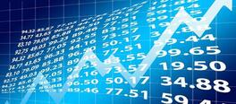

Backtesting is a powerful tool for traders and investors alike. Our principals have decades of experience building massive-scale quantatative trading systems that can be tested and tuned with a high resistance to overfitting. We can help you build a backtesting framework that will help you make better decisions, and have confidence that your strategies will work in the real world. We also provide assistance in monetizing your strategies by dynamically optimizing your trading parameters on historical data to maximize your profits.